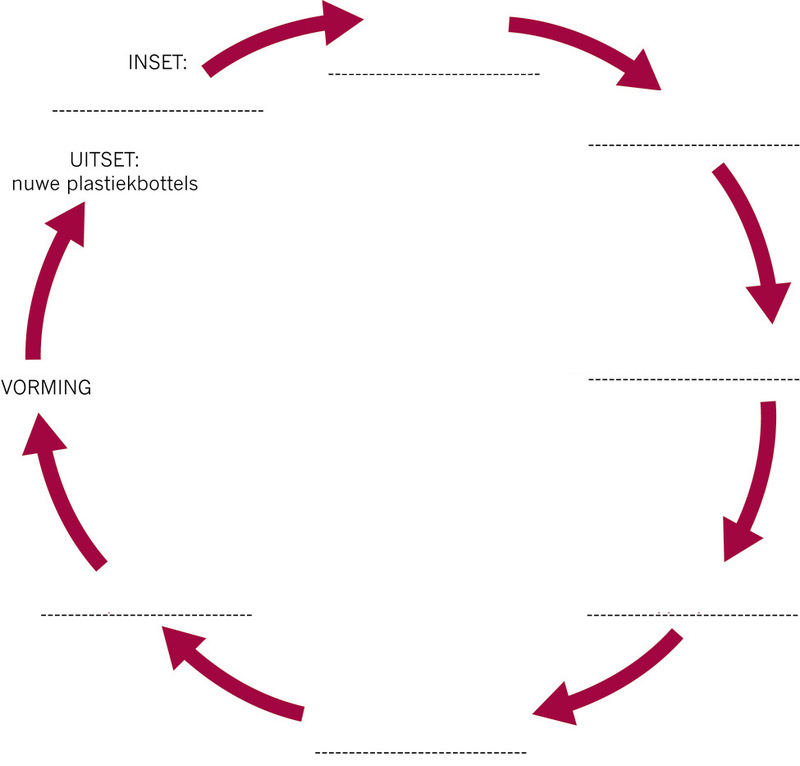

Herwinning en vervaardiging met herwonne plastiek
In hierdie hoofstuk gaan jy leer hoe plastiek-afval herwin word om nuwe produkte te maak.
Formering van herwonne plastiekkorrels na nuwe produkte
Daar is twee stappe betrokke in die maak van plastiekbottels; inspuitvormwerk en blaasvormwerk.
Stap 1: inspuitvormwerk om voorafvorms van korrels te maak
Inspuitvormwerk word gebruik om plastiek “voorafvorms” van bottels te maak. Voorafvorms is soos klein bottels met baie dik wande wat reeds die nek en skroefdraad van die finale bottel het. Figuur 1 wys die voorafvorm van ’n plastiekbottel. .
Figuur 2 wys die inspuitvorm- werkmasjien op verskillende tye van die inspuitvormwerkproses.
In hierdie diagram is die plastiek die gekleurde materiaal. Die rou materiaal wat in die masjien ingaan is amper-ronde stukkies plastiek wat korrels genoem word. Hulle is aanvanklik hard omdat hulle nog nie met hitte behandel is nie, en word in blou aangedui op die diagram. Die plastiek moet sag en warm wees vir die inspuitingsproses om te werk.
Die korrels word vorentoe gedruk deur ’n skroef wat deur ’n motor gedraai word. Die korrels word terselfdertyd verhit totdat hulle smelt. Die draaikrag van die skroef veroorsaak druk wat die gesmelte plastiek in die vorm indruk of inspuit. Sodra die vorm gevul is, sal opening van die vorm waar die gesmelte plastiek ingespuit is, toegemaak word, en die vorm word laat staan om af te koel.
Die plastiek in die vorm stol soos wat dit afkoel. Sodra dit genoegsaam afgekoel het, word die twee helftes van die vorm oopgemaak sodat die voorafvorm wat gemaak is, uitgehaal kan word.
Beantwoord die volgende vrae wat verband hou met figuur 2.
1. Plaas ’n byskrif by die vorm sodra jy dit sien.
2. Waar sal jy die verhitter op die masjien plaas om die plastiek korrels te smelt? Teken ’n ekstra onderdeel of onderdele by om aan te dui waar die verhitter moet wees en plaas ’n byskrif by.
3. Kyk mooi na ’n plastiekbottel. Jy sal ’n baie dun rant sien waar die twee dele van die vorms verbind is. Indien jy dit nie kan sien nie, voel met jou vinger rondom die nek van die bottel. Waarom is die vorm se lyn aan albei kante van die bottelnek?

Stap 2: blaasvormwerk om die voorafvorms in bottels te vorm
Die voorafvorm gaan volgende na blaasvormwerkmasjien. Hierdie masjien blaas warm lug onder hoë druk in die voorafvorm in. Dit verhit die onderste deel van die voorafvorm sodat dit sag word en van vorm kan verander. Die hoë lugdruk forseer die wande van die voorafvorm om uit te sit en die nuwe vorm te vul, amper soos om ’n ballon op te blaas.
Dieselfde tipe voorafvorm kan in enige vorm bottel gemaak word, aangesien dit in verskillende vorms geblaas kan word. Al die bottels het wel dieselfde aanskroefprop.
1. Waarom sal al die verskillende vorm bottels op dieselfde aanskroefprop pas?
Herwinning van plastiek om nuwe produkte te maak
In hoofstuk 9 het jy geleer waarom ons plastiekhouers en ander produkte moet herwin. In hierdie les gaan jy leer hoe PET plastiek herwin kan word om nuwe, rou materiaal te maak.
Gevallestudie: die sikliese proses van plastiekherwinning
1. Waarom moet plastiek in verskillende tipes sorteer word voordat dit herwin kan word?
2. Hoe help die herwinningskodes op die plastiekhouers om dit te sorteer?
3. Houers bestaan nooit net uit plastiek nie. Kyk mooi na ’n houer. Watter ander materiale kan jy vind? Jy kan ook na die houers kyk wat jou klasmaats skool toe gebring het .
4. Is al die plastiekhouers in die afvalbak skoon? Is dit belangrik?
5. Plastiekbottels en ander houers neem baie spasie op. Waarom is dit ’n probleem?
6. Noem vier stappe waardeur plastiek moet gaan voordat dit geskik is om in nuwe produkte verander te word.
Die illustrasie op die volgende bladsy wys die plastiekherwinningsproses.
Elke tipe plastiek-afval word saamgepers in bale sodat dit maklik vervoer kan word. By die herwinningsfabriek word die plastiek-afval in klein stukkies versnipper, sodat dit makliker is om te hanteer en te was.
7. Voltooi die stelseldiagram hieronder deur beskrywings van die verskillende stappe van die herwinningsproses by te skryf. Wenk: Wanneer iets herwin word, beteken dit dat die uitset ook die inset is, aangesien die proses siklies is.


Wat het jy geleer?
1. Wat is die rou materiaal vir die bottels in hierdie proses?
2. Hoe kan verbruikers en huiseienaars dit makliker maak vir die herwinningsfabrieke om die plastiekprodukte te prosesseer en nuwe bottels te maak?
3. ’n Vervaardiger kan een tipe voorafvorm koop en dan verskillende vorms bottels maak. Hoe kan dit gedoen word?
4. Watter tipe formering dink jy word gebruik in die maak van plastiekstoele?
5. Wat is die verskil tussen inspuitvormwerk en blaasvormwerk?
Volgende week
In die komende drie weke gaan jy jou Mini-PAT vir hierdie kwartaal doen. Jy gaan ou plastiekbottels vir ’n nuwe doel hergebruik. Hierdie bottels moet egter verander word, daarom gaan jy die ou bottels gebruik om nuwe produkte te ontwerp en maak.